vignettes/spatial_genomics_mouse_kidney.Rmd
spatial_genomics_mouse_kidney.RmdThis tutorial covers Giotto object creation and simple exploratory analysis with the gene expression data generated on Spatial Genomics’ GenePS instrument of kidney tissue resected from a 2-month-old female mouse. The data was generated using sequential fluorescence in situ hybridization (seqFISH) to visualize 220 genes directly in the sample.
# Ensure Giotto Suite is installed
if(!"Giotto" %in% installed.packages()) {
devtools::install_github("drieslab/Giotto@suite")
}
library(Giotto)
# Ensure Giotto Data is installed
if(!"GiottoData" %in% installed.packages()) {
devtools::install_github("drieslab/GiottoData")
}
library(GiottoData)
# Ensure the Python environment for Giotto has been installed
genv_exists = checkGiottoEnvironment()
if(!genv_exists){
# The following command need only be run once to install the Giotto environment
installGiottoEnvironment()
}
# Set path to folder containing spatial genomics data
datadir = '/path/to/Spatial/Genomics/data/'
dapi = paste0(datadir, 'SG_MouseKidneyDataRelease_DAPI_section1.ome.tiff')
mask = paste0(datadir, 'SG_MouseKidneyDataRelease_CellMask_section1.tiff')
tx = paste0(datadir, 'SG_MouseKidneyDataRelease_TranscriptCoordinates_section1.csv')
# Create and plot giotto polygons
gpoly = createGiottoPolygonsFromMask(mask, shift_vertical_step = F,
shift_horizontal_step = F,
flip_horizontal = F,
flip_vertical = F)
plot(gpoly)
# Create and plot giotto points
tx = data.table::fread(tx)
gpoints = createGiottoPoints(tx)
plot(gpoints, raster_size = 1e3)
# Create giottoLargeImage and giottoObject
gimg = createGiottoLargeImage(dapi, use_rast_ext = TRUE)
sg = createGiottoObjectSubcellular(gpoints = list('rna' = gpoints),
gpolygons = list('cell' = gpoly))
sg = addGiottoLargeImage(sg, largeImages = list(image = gimg))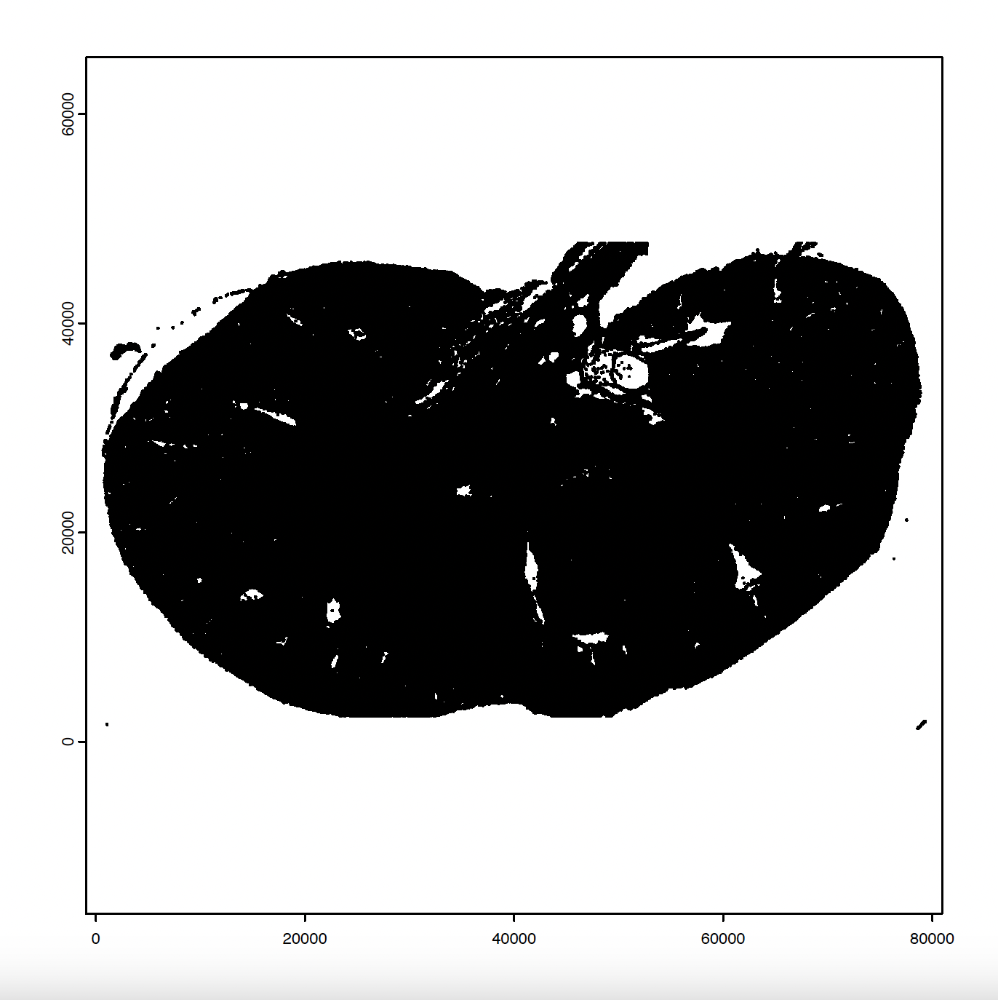
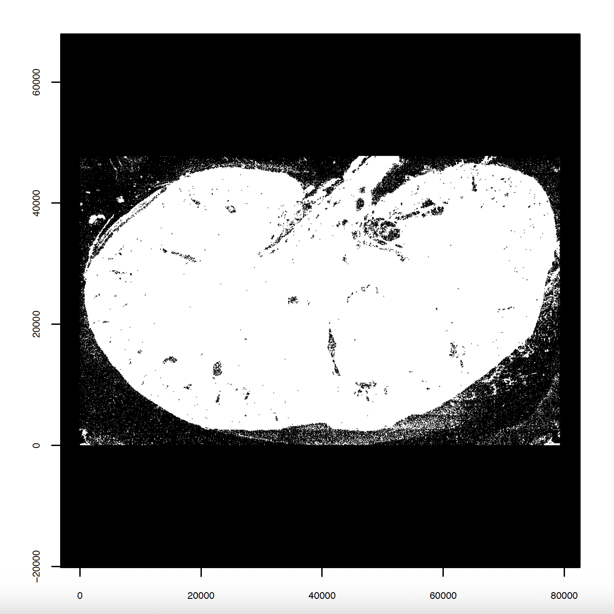
# Aggregate
sg = calculateOverlapRaster(sg,
spatial_info = 'cell',
feat_info = 'rna')
sg = overlapToMatrix(sg)
sg = addSpatialCentroidLocations(sg)
# Filter and Normalize
filterDistributions(sg, detection = 'feats')
filterDistributions(sg, detection = 'cells')
sg = filterGiotto(sg, feat_det_in_min_cells = 100, min_det_feats_per_cell = 20, expression_threshold = 1)
sg = normalizeGiotto(sg)
# Statistics
sg = addStatistics(sg)
# Calculate highly variable features
sg = calculateHVF(gobject = sg)
cat(fDataDT(sg)[, sum(hvf == 'yes')], 'hvf found')
# Only 18 hvf found -> better to use ALL genes -> feats_to_use = NULL
sg = runPCA(gobject = sg,
spat_unit = 'cell',
expression_values = 'scaled',
feats_to_use = NULL,
scale_unit = F,
center = F)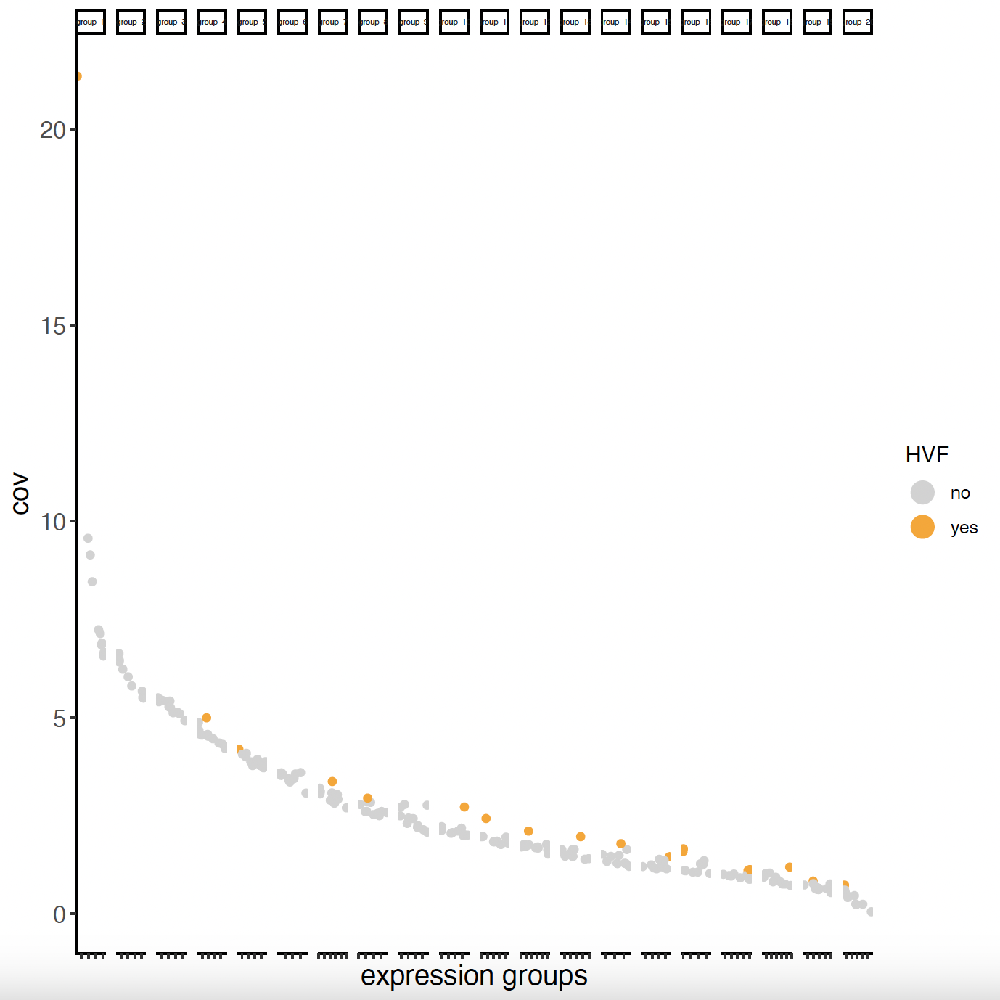
# Visualize Screeplot and PCA
screePlot(sg,
ncp = 20,
save_param = list(
save_name = 'sg_screePlot'))
plotPCA(sg,
spat_unit = 'cell',
dim_reduction_name = 'pca',
dim1_to_use = 1,
dim2_to_use = 2)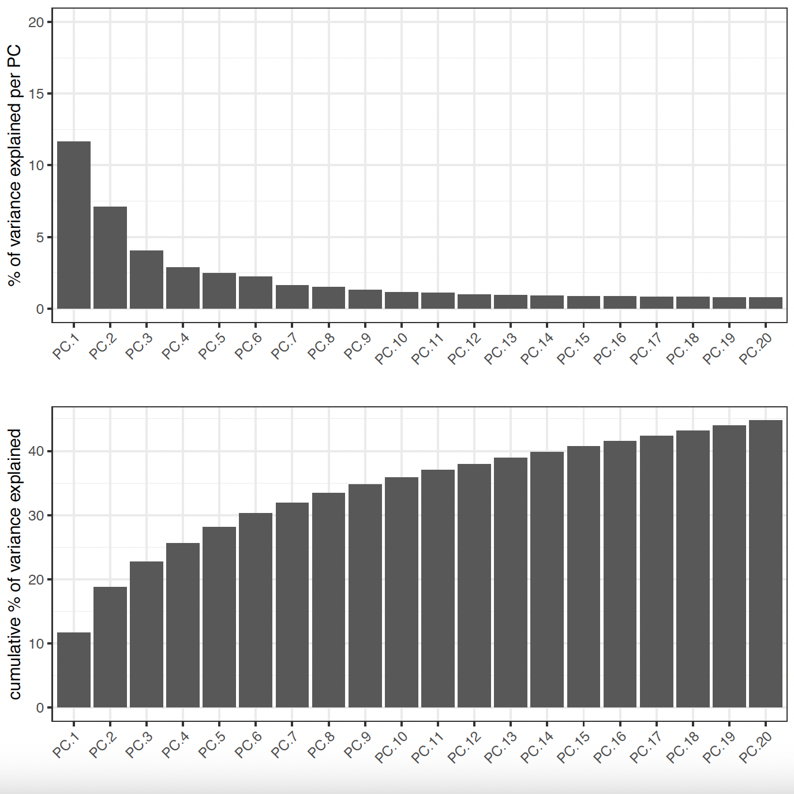
# Run and Plot tSNE and UMAP
sg = runtSNE(sg,
dimensions_to_use = 1:10,
spat_unit = 'cell',
check_duplicates = FALSE)
sg = runUMAP(sg,
dimensions_to_use = 1:10,
spat_unit = 'cell')
plotTSNE(sg,
point_size = 0.01,
save_param = list(
save_name = 'sg_tSNE'))
plotUMAP(sg,
point_size = 0.01,
save_param = list(
save_name = 'sg_UMAP'))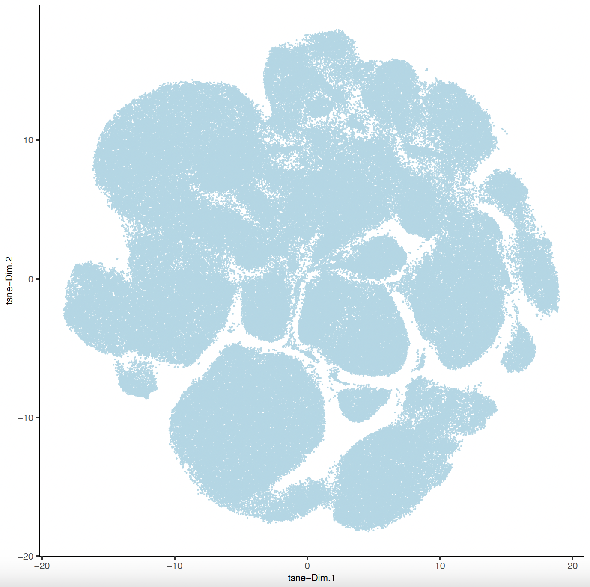
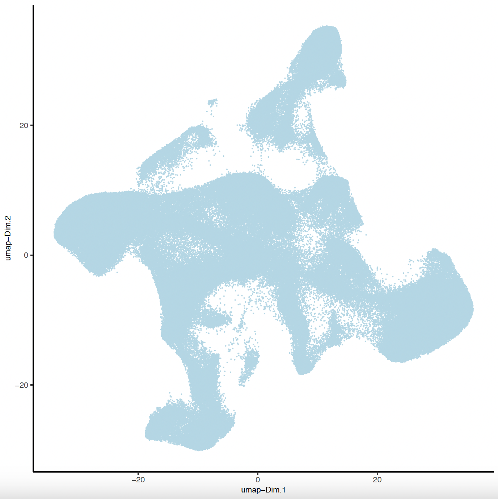
# Clustering and UMAP cluster visualization
sg = createNearestNetwork(sg,
dimensions_to_use = 1:10,
k = 10,
spat_unit = 'cell')
sg = doLeidenCluster(sg,
resolution = 0.25,
n_iterations = 100,
spat_unit = 'cell')
# Plot Leiden clusters onto UMAP
plotUMAP(gobject = sg,
spat_unit = 'cell',
cell_color = 'leiden_clus',
show_legend = FALSE,
point_size = 0.01,
point_shape = 'no_border',
save_param = list(save_name = 'sg_umap_leiden'))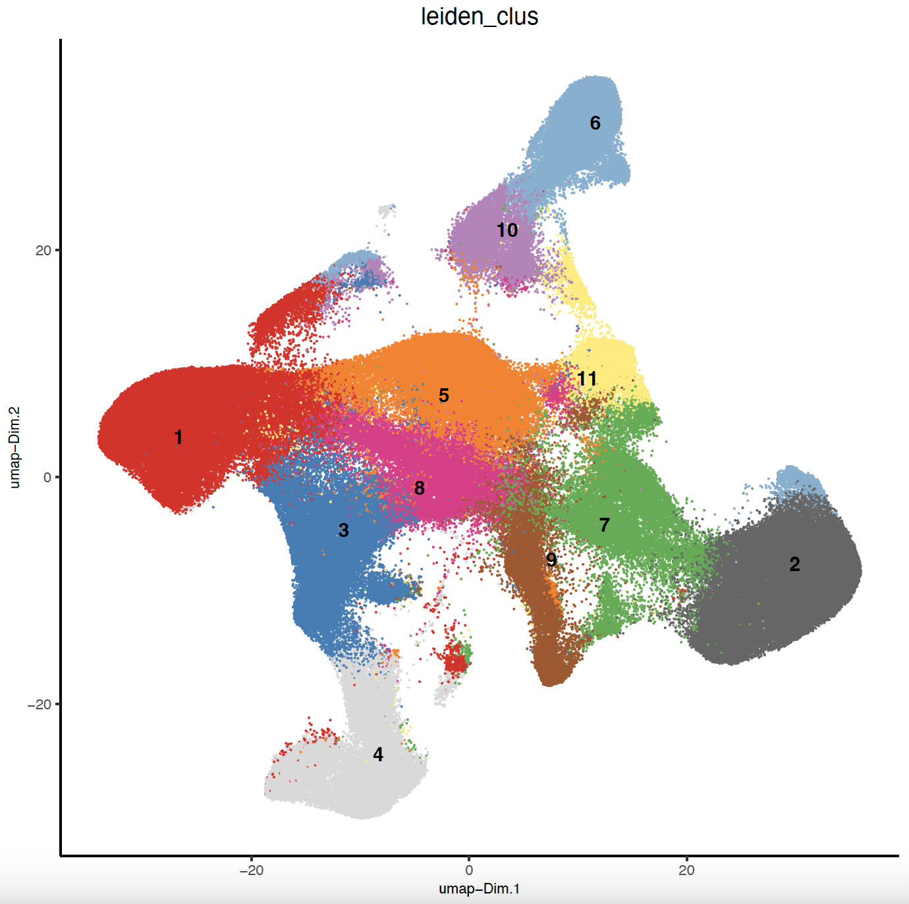
# Plot Leiden clusters onto spatial image plot
my_spatPlot <- spatPlot2D(gobject = sg,
spat_unit = 'cell',
cell_color = 'leiden_clus',
point_size = 0.4,
point_shape = 'no_border',
show_legend = TRUE,
image_name = gimg,
save_param = list(
save_name = 'sg_spat_leiden',
base_width = 15,
base_height = 15))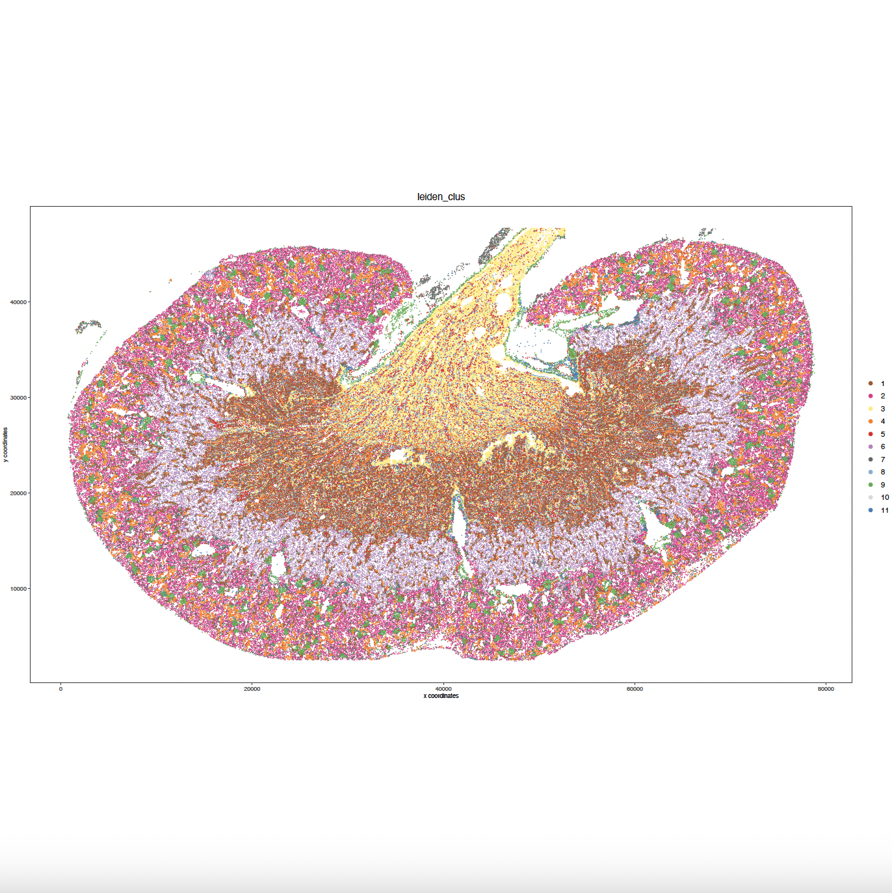
# Identify gene markers per cluster
markers = findMarkers_one_vs_all(gobject = sg,
method = 'gini',
expression_values = 'normalized',
cluster_column = 'leiden_clus',
min_feats = 1, rank_score = 2)
# Display details about the marker genes
markers[, head(.SD, 2), by = 'cluster']
# Violinplots to show marker expression
topgini_genes = unique(markers[, head(.SD, 2), by = 'cluster'])
violinPlot(sg, feats = topgini_genes$feats[1:10], cluster_column = 'leiden_clus')
violinPlot(sg, feats = topgini_genes$feats[11:20], cluster_column = 'leiden_clus')
# Known markers to Annotate Giotto
selected_genes = c('My12', 'G6pc', 'Ppp1r1a', 'Grik5', 'Hsd11b2', 'Rhbg', 'Mapk11',
'Egf17', 'Gpr55', 'Acsm2', 'Tpm2', 'D1c1', 'Shisa3',
'Tspan2', 'Sox17', 'Eef2', 'Cd79b', 'Ctss', 'Serpina1f', 'Cyp51')
gobject_cell_metadata = pDataDT(sg)
cluster_order = unique(gobject_cell_metadata$leiden_clus)
# Plot markers to clusters heatmap
plotMetaDataHeatmap(sg, expression_values = 'scaled',
metadata_cols = c('leiden_clus'),
selected_feats = selected_genes,
custom_feat_order = rev(selected_genes),
custom_cluster_order = cluster_order)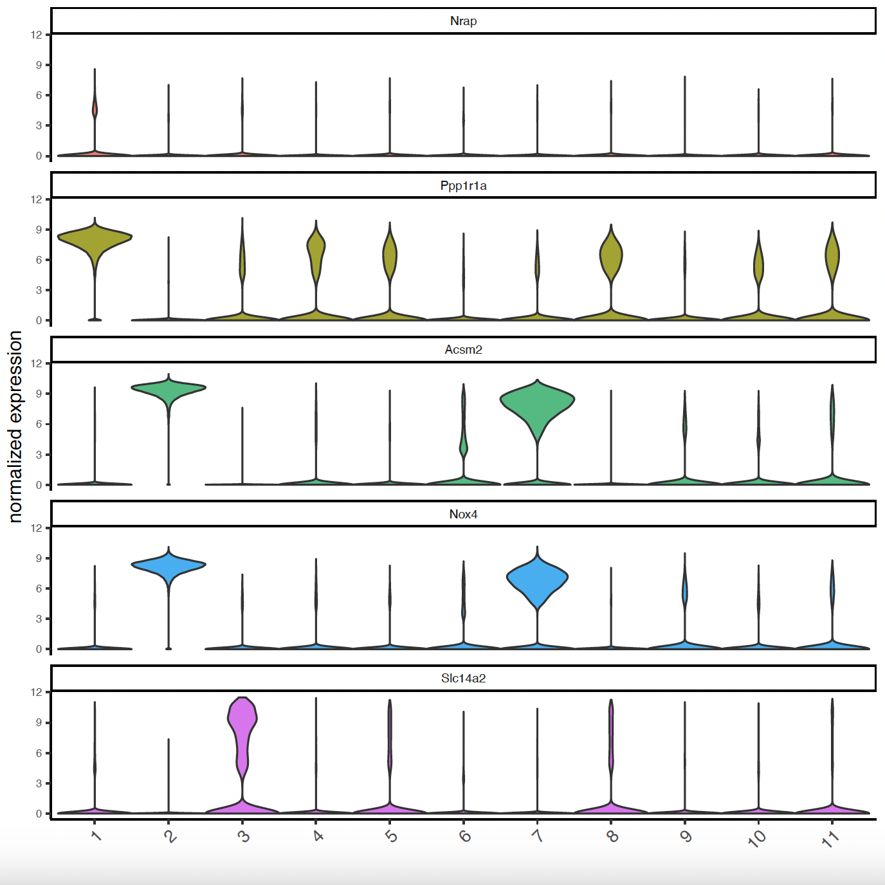
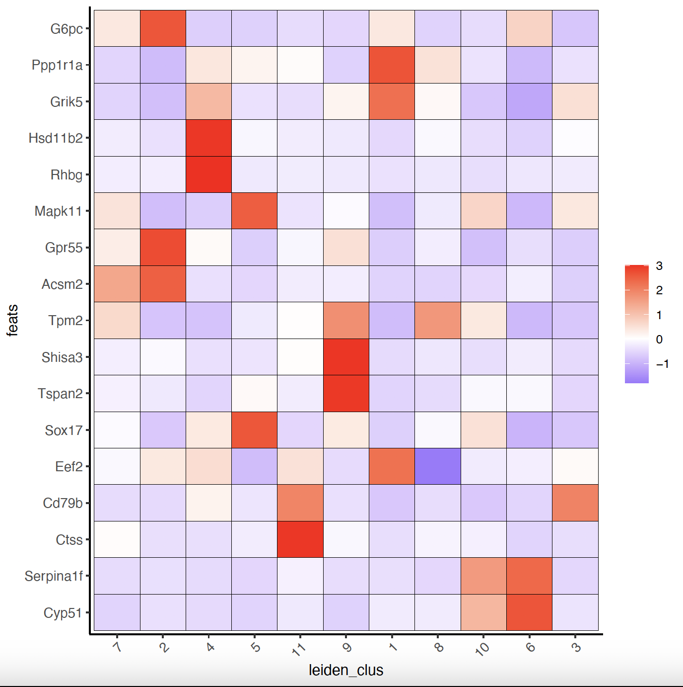
plotStatDelaunayNetwork(gobject = sg, maximum_distance = 250)
sg = createSpatialNetwork(gobject = sg, minimum_k = 2,
maximum_distance_delaunay = 250)
sg = createSpatialNetwork(gobject = sg, minimum_k = 2,
method = 'kNN', k = 10)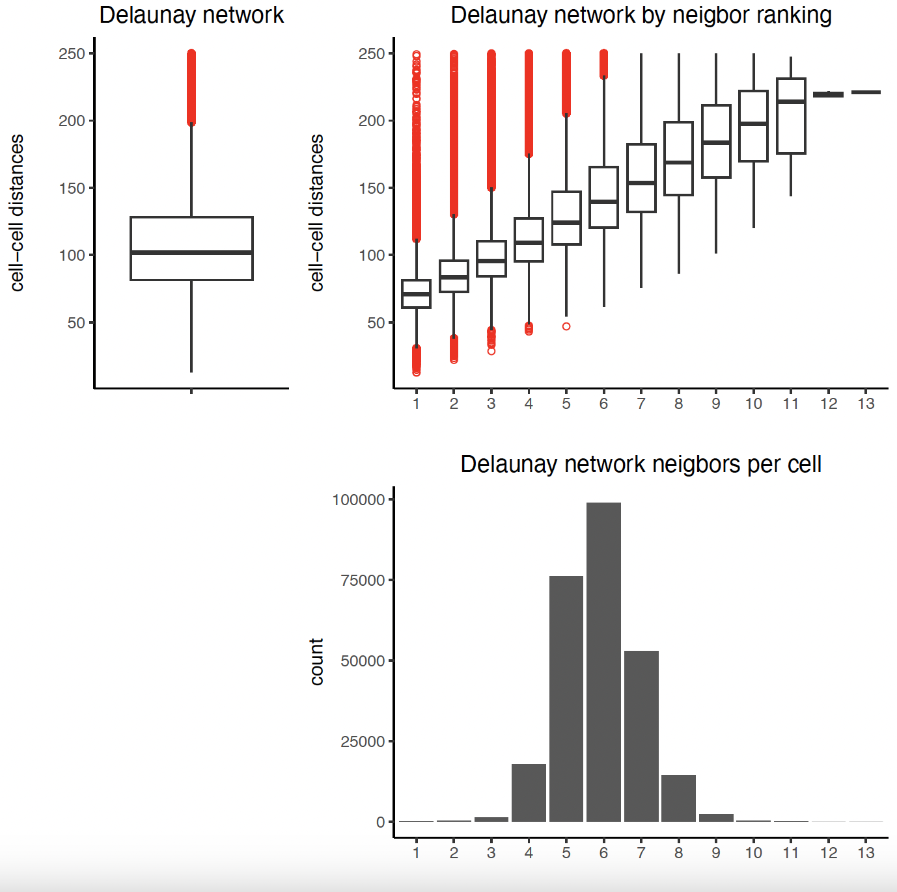
km_spatialgenes = binSpect(sg)
spatFeatPlot2D(sg, expression_values = 'scaled',
feats = km_spatialgenes[1:4]$feats,
point_shape = 'no_border',
show_network = F, network_color = 'lightgrey', point_size = 0.5,
cow_n_col = 2)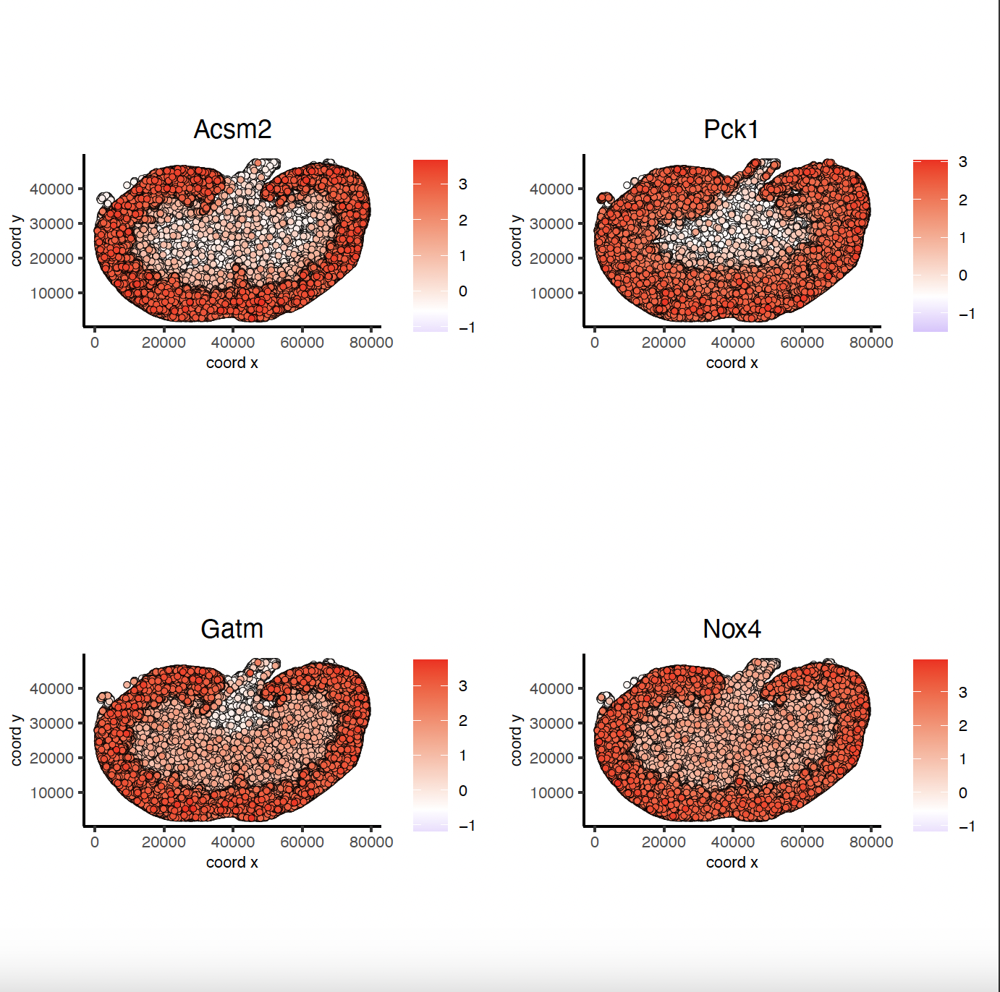
rank_spatialgenes = binSpect(sg, bin_method = 'rank')
spatFeatPlot2D(sg, expression_values = 'scaled',
feats = rank_spatialgenes[1:4]$feats,
point_shape = 'no_border',
show_network = F, network_color = 'lightgrey', point_size = 0.5,
cow_n_col = 2)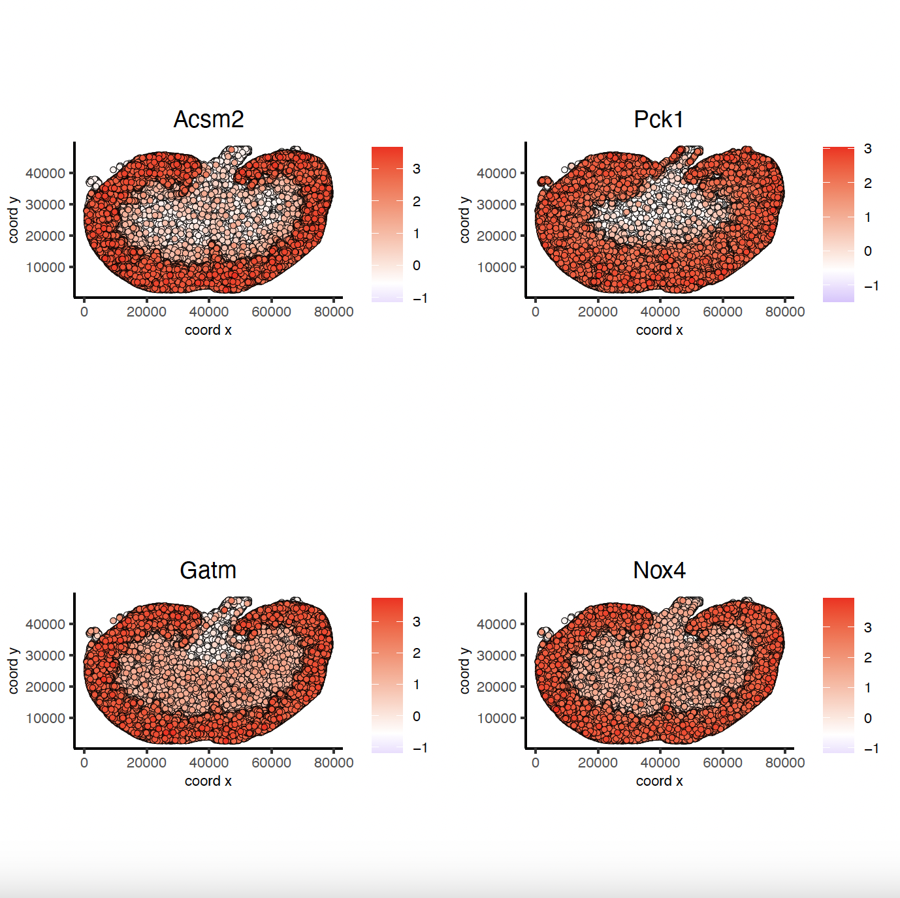
# Spatial Co-Expression
spatial_genes = km_spatialgenes[1:500]$feats
# 1. create spatial correlation object
spat_cor_obj = detectSpatialCorFeats(sg,
method = 'network',
spatial_network_name = 'Delaunay_network',
subset_feats = spatial_genes)
# 2. identify most similar spatially correlated genes for one gene
Acsm2_top10_genes = showSpatialCorFeats(spat_cor_obj, feats = 'Acsm2', show_top_feats = 10)
spatFeatPlot2D(sg, expression_values = 'scaled',
feats = Acsm2_top10_genes$variable[1:4], point_size = 0.5,
point_shape = 'no_border')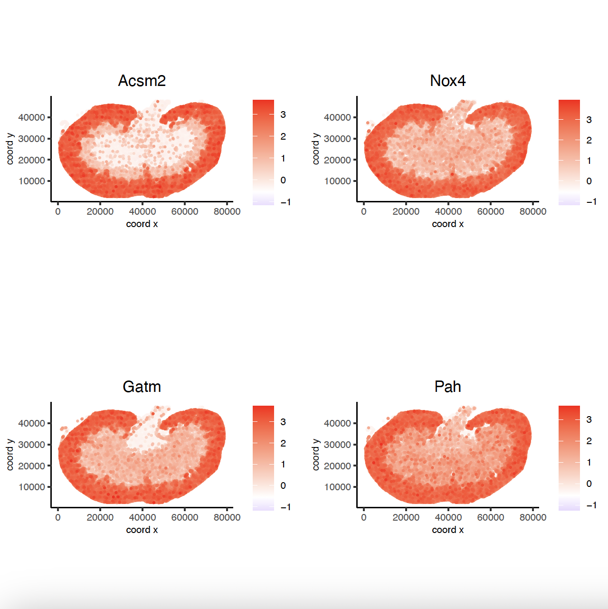
# 3. cluster correlated genes & visualize
spat_cor_obj = clusterSpatialCorFeats(spat_cor_obj, name = 'spat_netw_clus', k = 10)
heatmSpatialCorFeats(sg, spatCorObject = spat_cor_obj, use_clus_name = 'spat_netw_clus',
heatmap_legend_param = list(title = 'Spatial Correlation'))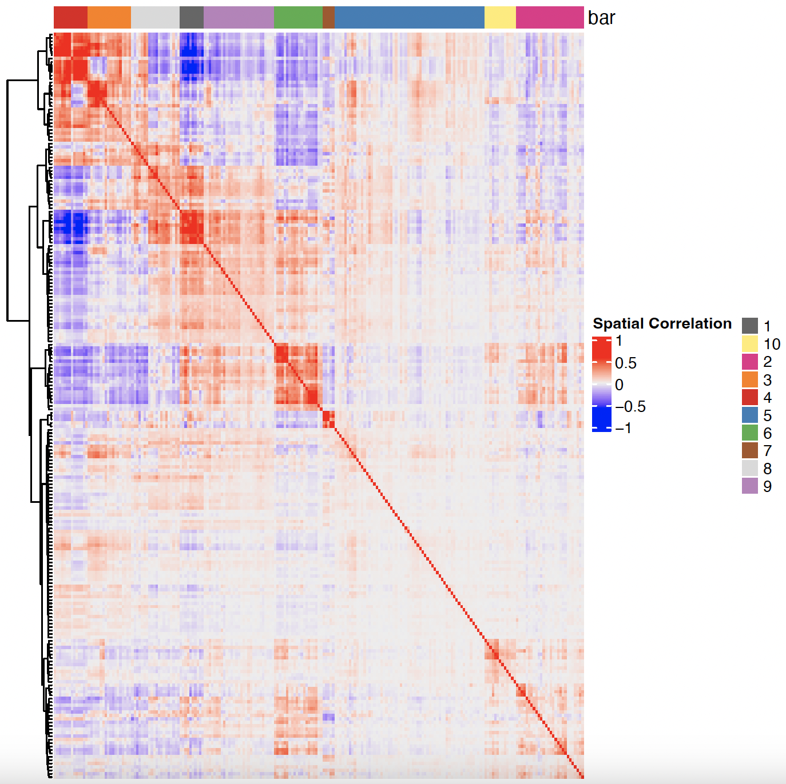
# 4. rank spatial correlated clusters and show genes for selected clusters
netw_ranks = rankSpatialCorGroups(sg, spatCorObject = spat_cor_obj,
use_clus_name = 'spat_netw_clus')
top_netw_spat_cluster = showSpatialCorFeats(spat_cor_obj, use_clus_name = 'spat_netw_clus',
show_top_feats = 1)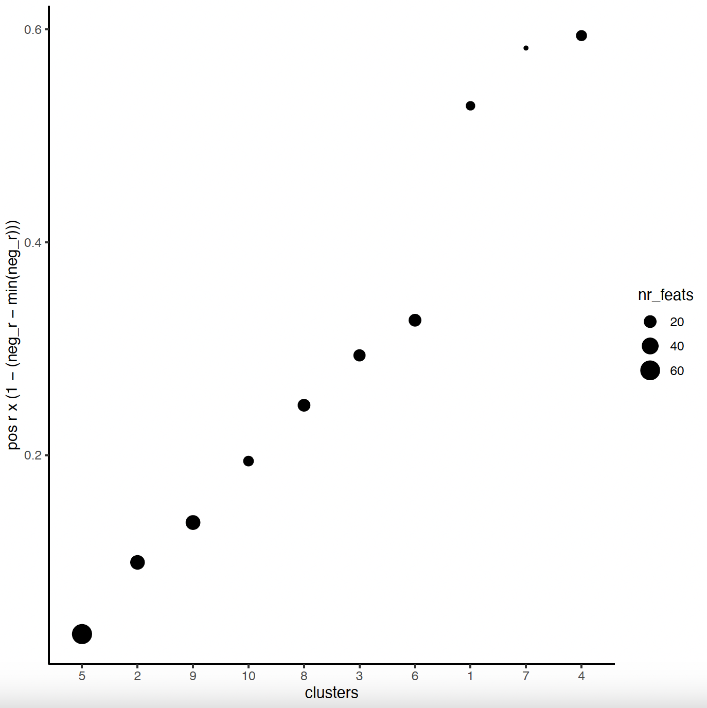
# 5. create metagene enrichment score for clusters
cluster_genes = top_netw_spat_cluster$clus; names(cluster_genes) = top_netw_spat_cluster$feat_ID
sg = createMetafeats(sg, feat_clusters = cluster_genes, name = 'cluster_metagene')
spatCellPlot(sg,
spat_enr_names = 'cluster_metagene',
cell_annotation_values = netw_ranks[1:4]$clusters,
point_size = 0.05, point_shape = 'no_border')
spatCellPlot(sg,
spat_enr_names = 'cluster_metagene',
cell_annotation_values = netw_ranks[5:8]$clusters,
point_size = 0.05, point_shape = 'no_border')
spatCellPlot(sg,
spat_enr_names = 'cluster_metagene',
cell_annotation_values = netw_ranks[9:10]$clusters,
point_size = 0.05, point_shape = 'no_border')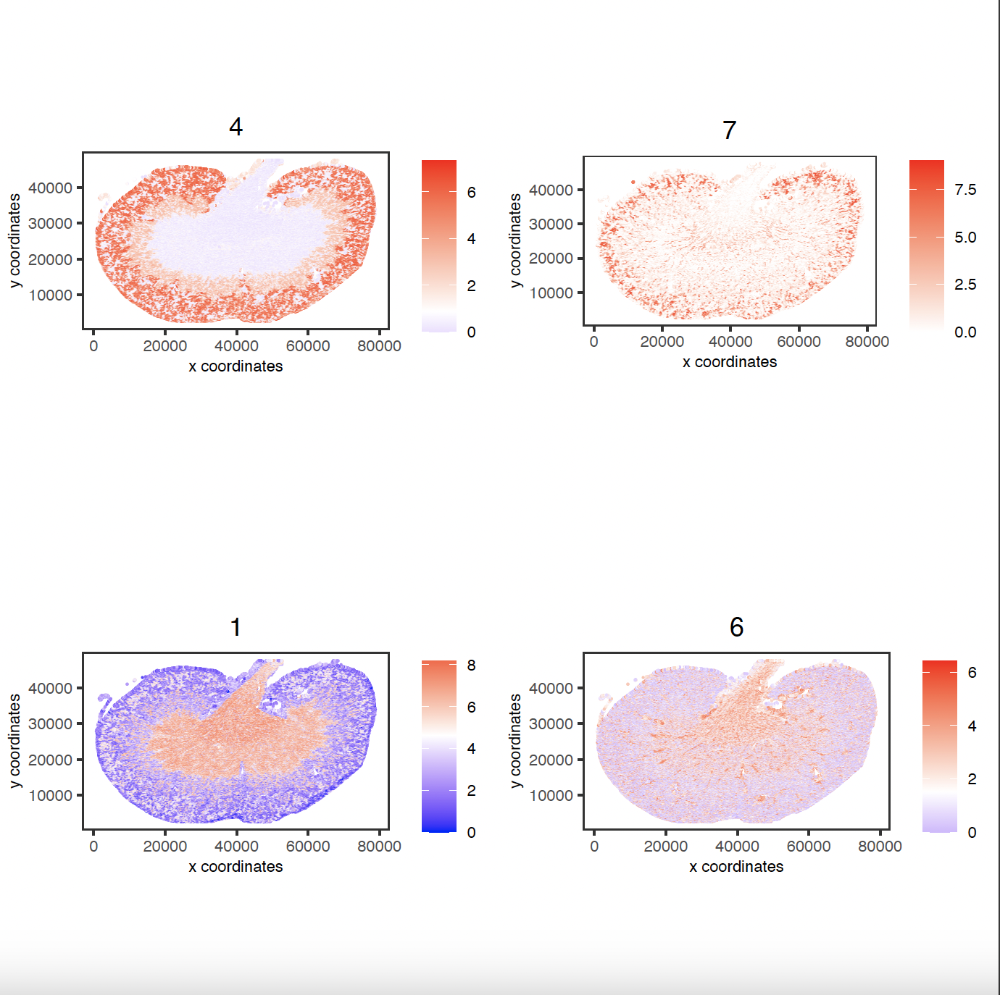